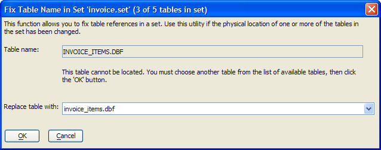

A5_RepairSetStructure()
Syntax
A5_RepairSetStructure( Set_Name as C )
Argument | Description |
Set_Name | The name of a set in the current database. |
Description
The A5_RepairSetStructure() function displays the Fix Table Name in Set dialog. This function allows you to fix table references in a set when the location of one or more tables in the set has changed.

Example
a5_Repair_Set_Structure("invoice") |
See Also